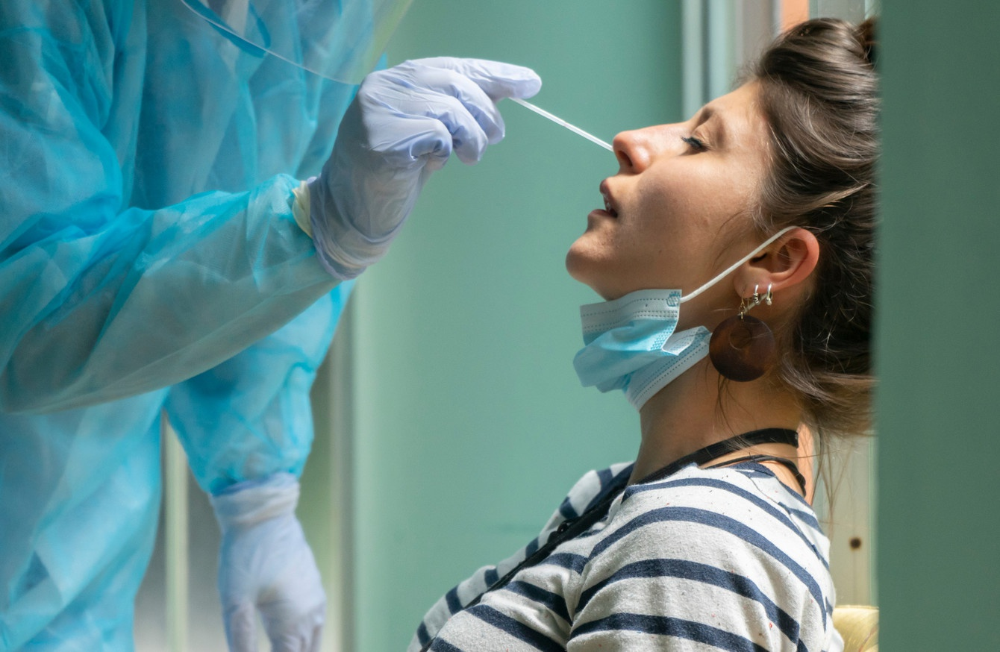

Khi vắc xin được tung ra vào đầu năm nay, đại dịch Covid-19 gần như được kiểm soát một cách kỳ diệu ở một số quốc gia.
Nhiều người đã tiêm vắc xin vẫn bị nhiễm Covid-19
Nhưng giờ đây, khi các ca nhiễm biến thể Delta đang gia tăng ở các quốc gia có tỷ lệ tiêm chủng cao, kể cả Israel và Anh, nhiều người đã tiêm đủ vắc xin đang cảm thấy lo lắng.
Sau đây, các chuyên gia sẽ giải đáp những thắc mắc về vắc xin ở giai đoạn đại dịch mới do chủng Delta thống trị này, theo Science.
Vắc xin có chống được chủng Delta không?
“Hiệu quả của vắc xin giảm với biến chủng Delta. Điều đó là không thể chối cãi”, bác sĩ Leif Erik Sander, chuyên gia về bệnh truyền nhiễm tại Bệnh viện Đại học Charité ở Berlin (Đức), cho biết.

Nhưng chính xác giảm bao nhiêu thì còn khác nhau giữa các nghiên cứu.
Một nghiên cứu mới đây trên người già trong viện dưỡng lão ở Mỹ đã phát hiện ra rằng vắc xin Pfizer và Moderna đã giảm hiệu quả phòng ngừa bệnh từ 75% trước khi có chủng Delta xuống còn 53% sau khi chủng Delta chiếm hơn 90% các trường hợp ở Mỹ, theo Science.
Một nghiên cứu lớn từ Anh cũng đã nhận thấy khả năng chống lại nhiễm Covid-19 có triệu chứng đã giảm xuống còn 84% đối với vắc xin Pfizer và 71% đối với vắc xin AstraZeneca, trong giai đoạn từ tháng 5 đến tháng 8.2021 khi xuất hiện biến chủng Delta.